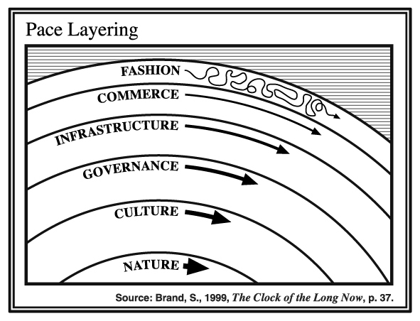
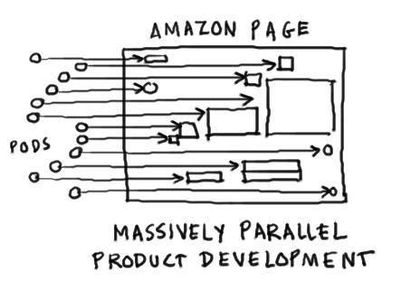
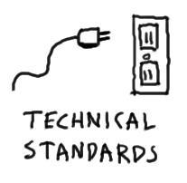

I’ve been reading Connected Company, and it made explicit a connection between organisational structure, change and what learning methods are appropriate. Great explanations as always from Dave Gray, and good timing with Source Camp coming!

Different layers of Source change at different speeds
{kind=link}
Some squads are infrastructure; they provide the platform and serve other squads

This allows the front line experiments, the new ideas that pop up in the Institute, to mix and match our strengths to try new things.
{kind=link}
To do this, we need to be loosely coupled. Each squad has freedom to move and isn’t locked into other squads. One of the best ways to think about how to connect squads and remain loosely coupled is contracts. What do you offer and get from other squads.

And if you’re in a base layer of the platform, you can start to codify standards. Then your contracts aren’t negotiated one at a time, they’re like an API or a restaurant menu.
{kind=link}
When we’re clear on our layers, we have repeatability where we need it, and freedom where we need it. This allows us to quickly re-organise our skills and resources to address changing customer needs without re-inventing the wheel.
{kind=link}
But re-inventing the wheel is currently our big weakness. We have poor organisational memory, and repeat mistakes made by others in Source. We need to share knowledge. Not just at Source Camp, but also in lessons learned shared in check-ins and more detailed lessons learned logs, and where there’s a repeating mistake, we need to move towards a codified system.
So what do we codify and what do we leave free to adapt by simply sharing lessons learned? That depends on the layer, and it also depends on what others are doing in the organisation. So choosing what learning to share and how to share it depends on the context of where we learned that. If it was front-line experience, on a pilot, or if it comes from a particular core competency we’re developing.